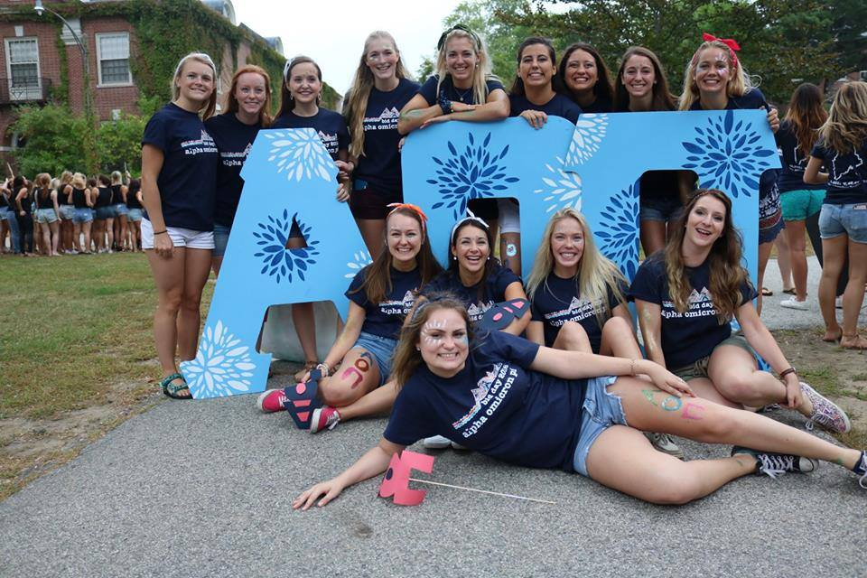

The University of Maine at Orono hosts AOII's Gamma Chapter. This chapter was founded by one of the four original founding sisters, Helen St. Clair Mullan in 1908. To this day we continue to hold our founding sister's values and do as much as we can to service others. We hold various events during the year to fundraise money to go towards The Arthritis Foundation. Our chapter specializes in helping out with Juvenile Arthritis.
Return to the home page